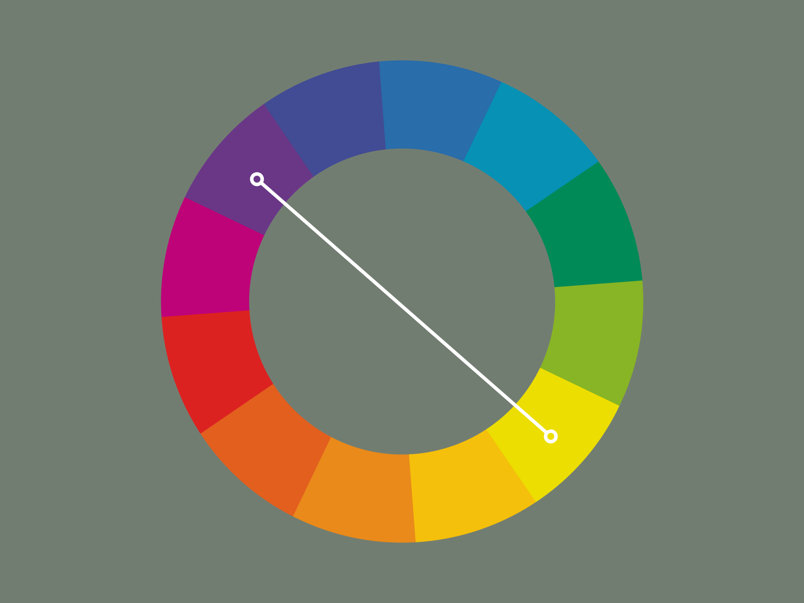
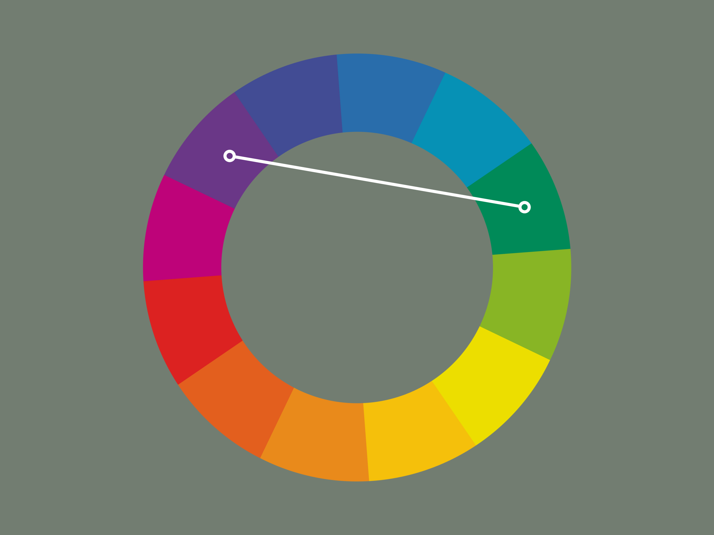
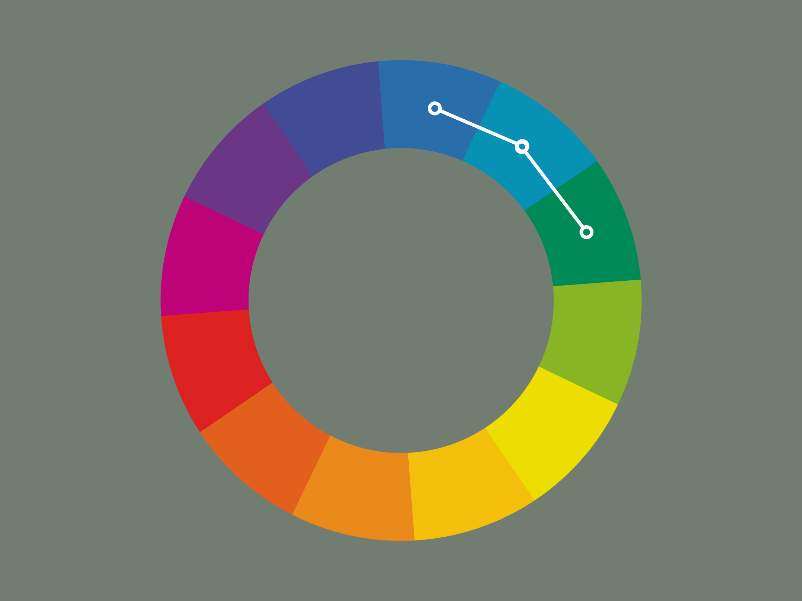

Web Design

Image by Anna Nekrashevich via Pexels
Image by Anna Nekrashevich via Pexels
Gestalt Principles is a concept from Gestalt psychology that describes how we perceive the world as patterns vs. a series of unrelated parts. There are 6 principles. These principles are mental shortcuts that also allow designers to make their websites easier to understand. Let’s look at some common design principles.
Elements that appear next/near each other tend to be grouped together even if the elements themselves are unrelated. In web design, it’s helpful to use this principle when organizing layout, similar or related information would make more sense to be grouped together.
Items/elements enclosed in a border/have the same bg color are assumed to be grouped together. Borders provide separation and figures will look separated from its background.
Elements that look similar/the same will naturally be grouped together.
Be aware that color has meaning. Connotations of colors can have very different meanings based on culture. The connotation in one culture can vary from the connotation in another. Colors also convey emotions. They can fall into different categories of warm, cool, or neutral. Warm colors tend to be reds, oranges, and yellows. While cool colors are more blues, greens, or purples. Neutral colors are more like browns, greys, and whites. These colors/shades are grouped together because they tend to carry similar emotion/energy.
When considering color, rather than looking at each one individually, you also want to consider how they work together. For example, an important color relationship is contrast, which is the difference between two colors. Highest contrast is seen between black and white, while most websites actually use light/dark greys for this contrast. Having a good amount of contrast makes your website look nice, however is also beneficial for users who may be colorblind or have limited vision.
Along a similar line of how colors work together, let’s learn how we can choose color combinations. Let’s look at a color wheel to help.
The most common way of pairing colors is complimentary colors. Complimentary colors are the ones that sit directly across from each other on the color wheel. They complement each other and typically have high contrast, but they don’t necessarily look the best/most pleasing.
There’s a way we can fix this; using split complementary colors. Rather than picking one color then going directly across, take the initial color and go either right or left a couple colors. This will provide a softer contrast and a more visually pleasing pair.
Next is analogous colors. Rather than taking opposites, we take similar colors that sit next to each other on the color wheel. Using a group of colors that are close together on the color wheel provide enough contrast, and form a pleasant combination.
Now, let’s talk about accessibility. Developers should always design with accessibility in mind. A common quote that’s used is “You are not your user” which reminds you that you have to consider a variety of different perspectives. If we don’t, it’s easy to create a heavily biased product. This comes from the psychological principle of the false-consensus effect. This refers to people’s tendencies that others will automatically behave similarly or share the same beliefs in a given context. You want to try and create an inclusive design; focus on making something that’s equally accessible, a good representation , and responsive to everyone.
Some may think that inclusive design is focused on catering to specific people. However, many design components that were initially meant for better accessibility led to widespread usage. For example, closed captioning was initially created for those in the hard of hearing community, but is now used by a large number of people. It can be used for reading in a loud airport or for teaching a child how to read. Another design you might not realize is that high contrast screen settings were initially meant to help those with visual impairments; now we use them for using our phone in bright sunlight.
For tips on how to make your website more accessible check out this accessibility checklist
Wireframes are a visual guide for the content and functionality of a page prior to actual coding; you can think of it as a visual map for your product. Here you can design what elements you want to use, your color palette, as well as considering the user experience and feedback.
If you want to experience what a bad user interface (UI)/UX is like play this game